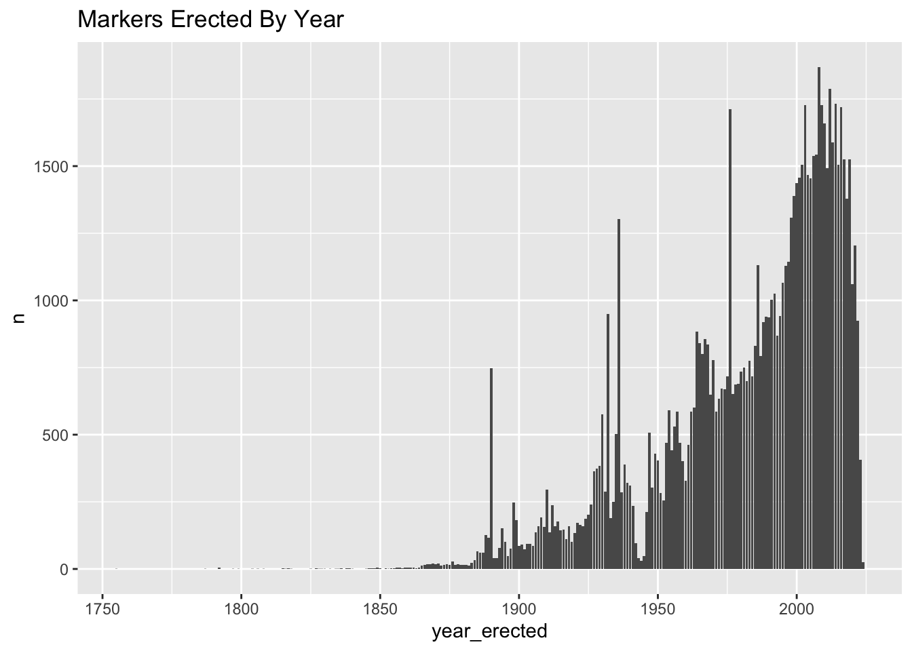

library(tidyverse)
library(here)
source(here("analysis/_functions.R"))Overview
Sentence:
+up_first_sunday_podcast: There are more than 180,000 of these “historical markers” – telling the country’s story
+digital: With more than 180,000 of them scattered across the U.S.
+marking_hate_watc_radio: There are 180,000 historical markers are all over this country telling America’s story.
+marking_the_frontier_radio: There are more than 180,000 of them
+marking_a_murder_digital: And it’s easy to see why: With more than 180,000 of them, no one has any idea what they all say.
+two_way_atc: Alright so more than 180,000 markers -
format(nrow(all_valid_markers_up_df), big.mark = ",")[1] "188,971"Sentence:
+up_first_sunday_podcast: Because the thing about this marker and thousands of others across this country, is that they are owned by private groups.
+digital: Because like thousands of markers nationwide, it was put up by a private group
+marking_hate_watc_radio: Because like thousands of markers across the country it’s owned by a private group
These are 990’sfrom four private groups:
- E Clampus Vitus: https://projects.propublica.org/nonprofits/organizations/953389522
- Native Daughters Of The Golden West: https://projects.propublica.org/nonprofits/organizations/943011278
- United Daughters of the Confederacy: https://projects.propublica.org/nonprofits/organizations/540631483
- Sons of Confederate Veterans: https://projects.propublica.org/nonprofits/organizations/581329949
Searching for their markers and adding them up leads to:
e_clampus_vitus_df = all_valid_markers_up_df %>%
filter(str_detect(organization, "e clampus"))
united_sons_daughters_golden_west_df = all_valid_markers_up_df %>%
filter(str_detect(organization, "native daughters of the golden west|native sons of the golden west"))
udc_scv_df = read.csv(here("data/processed/civil_war_heritage_group_markers_df.csv")) %>%
filter(str_detect(matched_groups, "sons of confederate veterans|united daughters of the confederacy"))
private_group_example = bind_rows(e_clampus_vitus_df ,united_sons_daughters_golden_west_df, udc_scv_df ) %>% distinct(marker_id, .keep_all = TRUE)
format(nrow(private_group_example), big.mark= ",")[1] "3,125"Sentence:
+up_first_sunday: The oldest markers in the database go back to the late 1700s
+two_way_atc: We found markers going all the way back to the late 1700s.
all_valid_markers_df %>%
arrange(year_erected) %>%
select(marker_id, year_erected, url, title, text) %>%
slice(1:10) %>%
cat_table("Oldest Markers")Oldest Markers
Sentence:
+up_first_sunday: But really markers began to take hold in the early part of the 20th century.
+digital: While some markers date back centuries, they proliferated in the 20th century,
+two_way_atc: But really you start to see markers take hold in this country in the 1900s, especially when Americans began to hit the open road in their new cars.
all_valid_markers_df %>%
summarize(n = n(), .by = year_erected) %>%
arrange(year_erected) %>%
ggplot(aes(x = year_erected, y = n))+
geom_bar(stat = "identity")+
labs(title = "Markers Erected By Year")
Overview
# Organization Completeness Summary ---
df_summary_org = all_valid_markers_df %>%
mutate(is_org_na = case_when(
organization == "" ~ "org_na",
TRUE ~ "org_complete"
)) %>%
group_by(is_org_na) %>%
summarise(n = n()) %>%
mutate(pct = (n / sum(n))*100)
pct_org_complete = df_summary_org[df_summary_org$is_org_na == "org_complete", "pct"][[1]]
# Year Erected Completeness Summary
df_summary_year_erected = all_valid_markers_df %>%
mutate(is_year_erected_na = case_when(
is.na(year_erected) ~ "year_erected_na",
TRUE ~ "year_erected_complete"
)) %>%
group_by(is_year_erected_na) %>%
summarise(n = n()) %>%
mutate(pct = (n / sum(n))*100)
pct_year_erected_complete =df_summary_year_erected[df_summary_year_erected$is_year_erected_na == "year_erected_complete", "pct"][[1]]
# Reported missing
df_reported_missing = all_valid_markers_df %>%
group_by(is_missing) %>%
summarise(n = n()) %>%
mutate(pct = (n / sum(n))*100)Main Marker Table
- The HMDB database has 193,676 markers as of
2024-03-22when we were sent a copy of the database. - 71.74% of markers have an organization listed.
- 45.69% of markers have a year erected listed.
- 2.43% of markers have been reported missing.
Categories
df_markers_without_category = anti_join(all_valid_markers_df, marker_categories_df, by = "marker_id") %>%
select(marker_id, title, organization, year_erected, marker_no, url)- 7 markers do not have a category listed. This means that the majority of markers have been categorized which will be helpful for analysis.
The categories are:
df_unique_categories =
marker_categories_df %>%
distinct(category)
cat_table(df_unique_categories, "Categories")Categories
Series
df_markers_without_series = anti_join(all_valid_markers_df, marker_series_df, by = "marker_id") %>%
select(marker_id, title, organization, year_erected, marker_no, url)- 65% of markers are not part of a series.
The series are:
df_unique_series =
marker_series_df %>%
distinct(name, optional_title)
cat_table(df_unique_series, "Series")Series